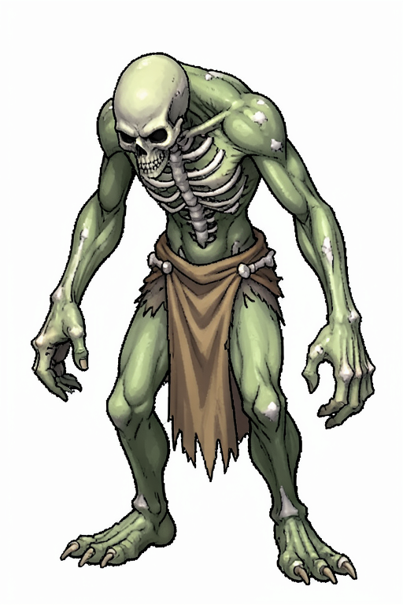
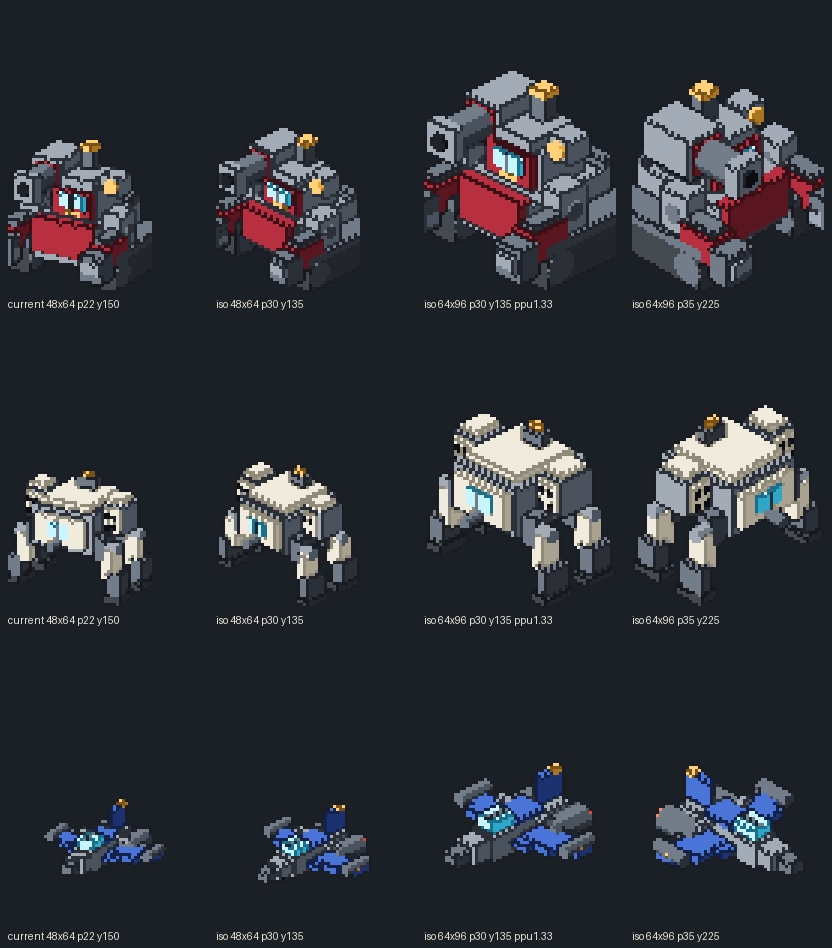
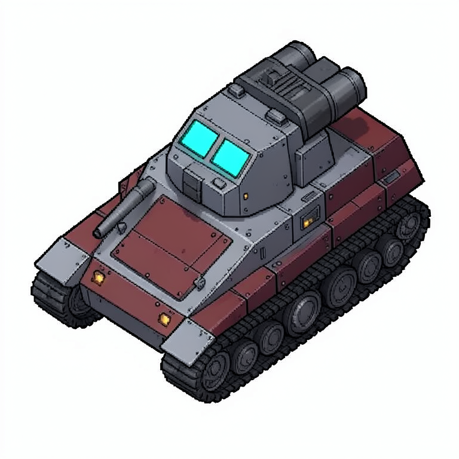
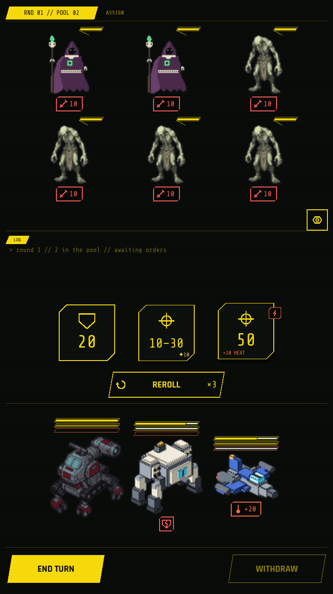
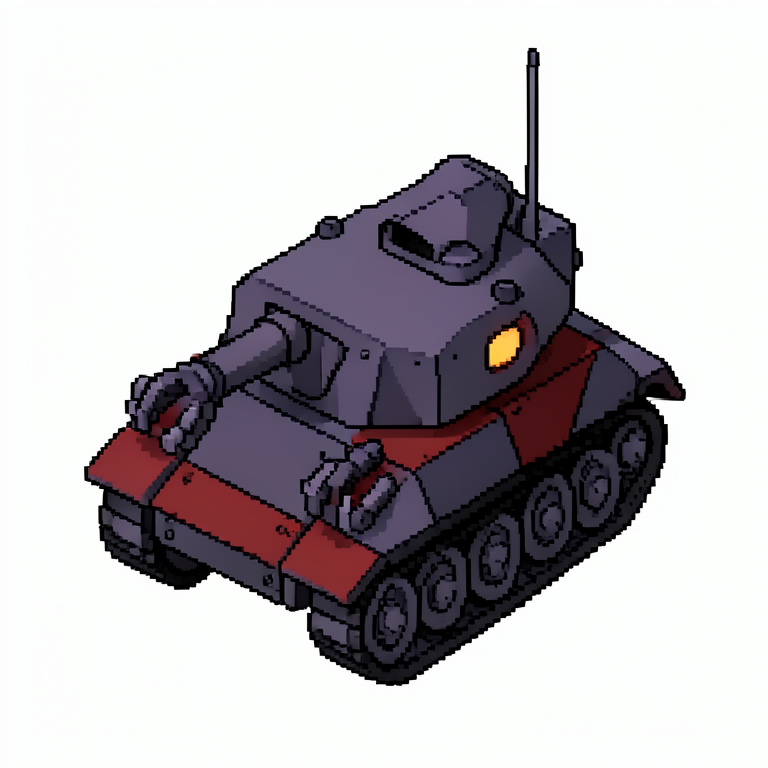

Riftgate Art Lab
Every art experiment from the 15 September sessions, in the order they happened, with what each one showed. Images under docs/art-lab/; the ext/ folder holds anything derived from third-party art and is not committed. Regenerate any of these with the commands in tools/foeforge/README.md and tools/spriter/README.md.
1. Enemies from the image model
FLUX.2 Klein 4B through mflux, prompted from the foe's codex text plus a Final Fantasy VI style brief. About eight seconds a candidate on the M4 Max. The cutter keys the white, crops, scales to 48x64, flattens to sixteen colours and adds the outline.


forge.py generate ghoul, on the automatic prompt.
2. Perspective for player units
The same three primitive models through our renderer at the old angle and at isometric angles, in the old and the new frame. The angle helps; the models are still boxes.

3. The model on mechs, and the hybrid
Prompt alone gave superb finish and ignored the design. Feeding the renderer's own sprite as the reference image at low strength kept the design and added the finish. In mflux, low strength means more freedom; 0.5 and above returns the render unchanged.




4. Two genres, two pixel grids
To keep the mechs from drifting toward the foes' painterly register, the cut can draw a mech on a grid twice as coarse with ten colours (cut-mech --chunk 2 --colours 10). The line-up in ext/ compares a borrowed walker, its refinement, and the Bulwark at both densities beside the ghoul.


5. A well-defined walker as source
The Antraxx rotation gif, split into eight facings by flood-filling the gradient, then one facing refined by the model in Halvard colours. For pipeline testing only; it is someone else's art.


6. A six-colour isometric tank as the register
Ryan's reference: an 86 px isometric tank from a sprite generator, about six tones, heavy outline, hard cel shading. Used as the model's reference for the Bulwark at strength 0.2, then cut at full density. The coarse grid destroyed it, because the reference's 86 px is our 80x96 frame at 2x already. The genre split comes from the palette and the shading, not the pixel size. Decided: mechs cut at eight colours, foes at sixteen.



Next art threads: Ryan's own mech designs through the hybrid, the Anvil model, the coarse grid as the mech default, and the terrain split (realistic near the gate, flat high fantasy near the rift).